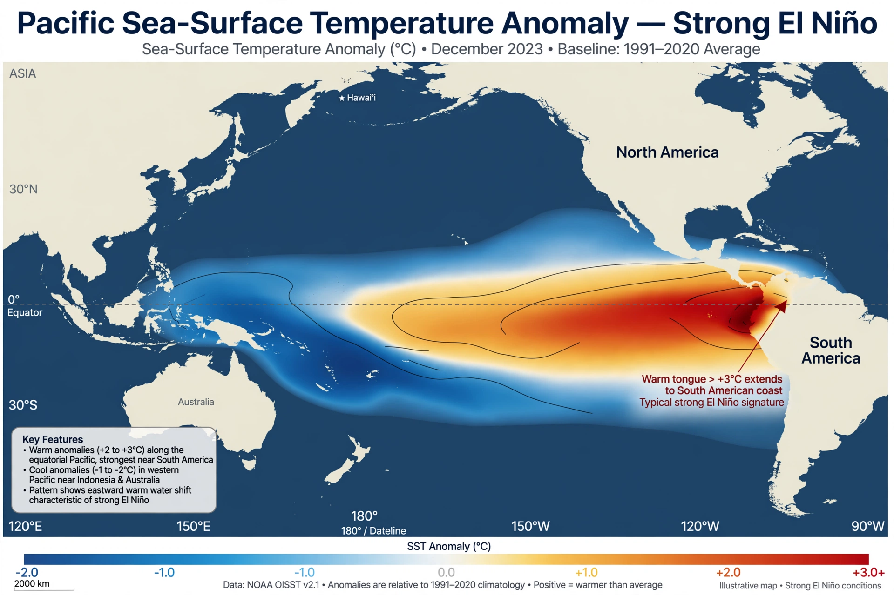

El Niño

El Niño is the warm phase of the El Niño–Southern Oscillation (ENSO), a recurring climate pattern in the tropical Pacific Ocean with worldwide weather consequences. During El Niño, the normally cold surface waters of the eastern equatorial Pacific warm substantially and the Pacific trade winds weaken.
Its counterpart, La Niña, brings cooler-than-average eastern Pacific waters and generally opposite effects. Individual events typically last nine to twelve months and recur irregularly every two to seven years.
Mechanism
In normal years, trade winds push warm surface water westward, piling it up near Indonesia while cold water upwells off South America — the pattern organised by the Walker circulation. In an El Niño the trades slacken, warm water sloshes eastward, upwelling is suppressed, and the zone of heavy tropical rainfall shifts toward the central and eastern Pacific.
The oscillation is monitored with sea-surface temperature indices in several 'Niño regions', satellite observations and a network of moored buoys across the equatorial Pacific.
Global effects
Strong events rearrange rainfall worldwide: floods on the west coast of South America and in parts of North America, drought in Indonesia, Australia and parts of India and southern Africa, and altered storm tracks and temperature patterns far beyond the tropics. Fisheries off Peru collapse when nutrient-rich upwelling fails, an effect noticed for centuries by local fishers, who named the warming for its arrival around Christmas — El Niño, 'the boy child'.
The very strong events of 1982–83, 1997–98 and 2015–16 each caused tens of billions of dollars of damage and contributed to record or near-record global average temperatures.
Prediction and outlook
Seasonal forecasts now anticipate events several months ahead, allowing governments to prepare for floods and droughts. Whether Climate change will change the frequency or intensity of extreme El Niño events remains an open research question, though some studies project more frequent extreme events under warming.
See also: Ocean current · Climate · Monsoon · Climate change · Ocean